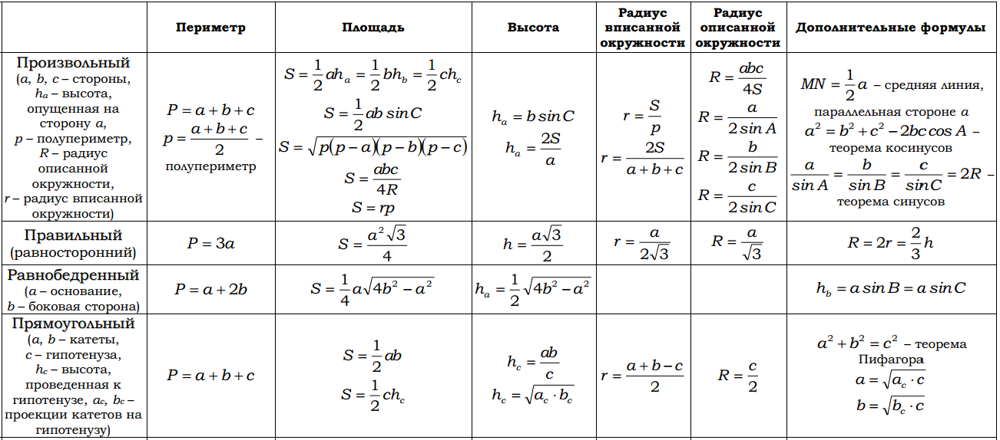

Для решения данной типа заданий необходимо уверенное знание и умение применять формулы планиметрии.
1. В параллелограмме ABCD точка Е – середина стороны АD. Отрезок ВЕ пересекает диагональ АС в точке Р. АB=PD.
а) Докажите, что отрезок ВЕ перпендикулярен диагонали АС.
б) Найдите площадь параллелограмма, если АВ = 2 см, ВС = 3 см.
2. На продолжении стороны АС за вершину А треугольника АВС отложен отрезок AD, равный стороне АВ. Прямая, проходящая через точку А параллельно BD, пересекает сторону ВС в точке М.
а) Докажите, что AM — биссектриса угла ВАС.
б) Найдите площадь трапеции AMBD, если площадь треугольника АВС равна 200 и известно отношение АС : АВ = 2:3.
3. Окружность, вписанная в квадрат ABCD, касается его стороны АВ в точке Т, а стороны AD в точке Р. Отрезки СТ и СР пересекают окружность в точках М и N соответственно. Сторона квадрата равна √10.
а) Докажите, что прямая ТР параллельна прямой MN.
б) Найдите МР.
4. Две окружности касаются внутренним образом в точке А, причем меньшая окружность проходит через центр О большей. Диаметр ВС большей окружности вторично пересекает меньшую окружность в точке М, отличной от точки А. Лучи АО и АМ вторично пересекают большую окружность в точках Р и Q соответственно. Точка С лежит на дуге AQ большей окружности, не содержащей точку Р.
а) Докажите что прямые PQ и ВС параллельны.
б) Известно, что sin AOC = √15/4. Прямые РС и AQ пересекаются в точке К. Найдите отношение QK:KA.